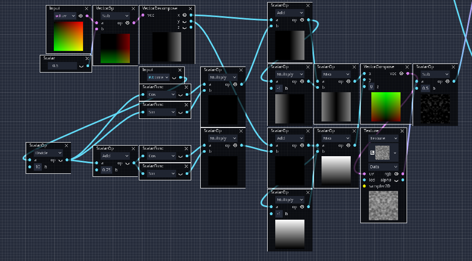
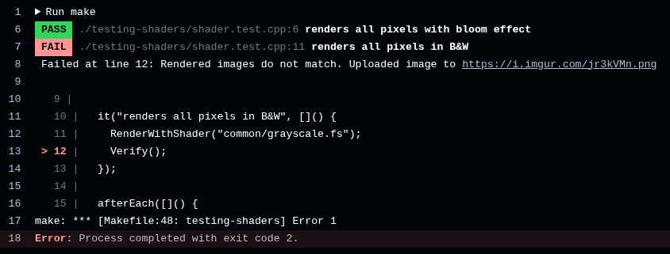
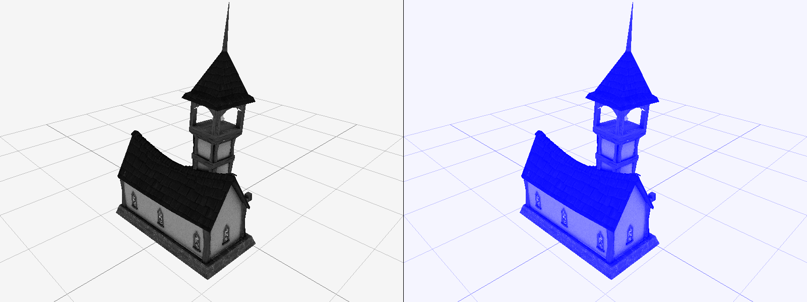
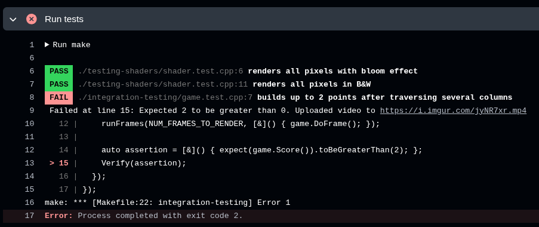

Getting a game to feel, look and play as intended is hard. There's a delicate balance that must be taken care of at all times.
Any seemingly tiny change could have enormous consequences on how a game looks and feels.
Applying testing techniques to games as if they were any software product does not always cut it. There are nuances in how a game
feels that are hard to capture with unit tests.
Systems are so complex and interconnected that it gets tough to keep track of how changes to shared modules might
impact the entire game.
Manual testing the whole game every time a change is made to the core mechanics or graphics isn't feasible, except for tiny
games.
Those manual tests could be automated too, but as with all heavy-weight full-app tests, building and maintaining them is time-consuming
and prone to breaking.
I wanted to explore a lightweight way to test full subsets of the game, without having to rely on playing the actual game.
Can we run small segments of the game and compare the results with stored snapshots, and find out if anything relevant has
changed?
In this article, I've explored how to apply snapshot testing to reduce unintended graphics regressions when building games.
There are many scenarios where snapshot testing can be useful, giving us a break from writing heavy acceptance tests. But it also comes
with several caveats, so it won't be applicable in all cases.
Testing and game development
Since I first started learning about software automated testing, I began thinking about how it could be
effectively applied to game development.
If you have ever developed a videogame, you will have experienced first-hand how complex game development can be.
Coincidentally, the environment where I've seen less automated testing through my career is game development.
Reading from sites like GameDeveloper and remembering conversations with
people working on established studios, I learned that many rely on automated QA tests based on macros.
These tests auto-play portions of the game from recorded controller inputs and bespoke markers detect whether a goal has
been reached or not. This requires launching the full game, and as with all QA acceptance tests, they are:
Expensive to implement.
Prone to breaking upon change.
Expensive to maintain and to keep them working.
Require powerful hardware to run (as powerful as the hardware required to run the game itself).
QA acceptance tests are of course necessary and must always be present in any product's testing pyramid. But,
how could the cost (both building, maintaining and running) of a game's test suite be reduced?
A friend of mine introduced me to how Factorio tests its vast
number of mechanics, and it rang a bell.
Factorio's testing mode resembles what I wanted to achieve
What about running smaller integration tests of only a subset of the full game? And all this while avoiding running them on retail hardware?
For example, directly on GitHub Actions CI runners.
The idea I came up with was combining a couple of technical concepts to achieve this, snapshot testing and off-screen rendering.
Understanding the concepts
Before getting started with the details, let's first define what are snapshot testing and off-screen rendering.
Snapshot Testing
Instead of attempting to define snapshot testing myself, I'll quote the definition from Jest's documentation:
A typical snapshot test case renders a UI component, takes a snapshot, then compares it to a reference snapshot
file stored alongside the test.
The test will fail if the two snapshots do not match: either the change is unexpected, or the reference snapshot
needs to be updated to the new version of the UI component.
Even though Jest mentions UI components, this technique can be applied to any resource that should not change unless intended.
For example, it works well when comparing CSV or JSON files generated by an integration test. So, why not with images?
A game snapshot test could render frames from the game, store the valid result together with the test, and fail the test
if the rendering results change.
To achieve this, the game and its test must be able to:
Render full frames in the testing environment (both local and CI).
Generate a stable result in every execution, so runs can be compared with the stored snapshot.
The latter point is a challenge in many rendering engines, but depending on the control you have over the rendering
process it can be tuned to be deterministic between runs.
The former can be solved through off-screen rendering, and combining it with software rendering could
make it work anywhere (like CI runners).
Off-screen & software rendering
Since the purpose of graphics rendering in a game is to let players interact with the game, games render their content
inside a window on the screen.
But as you will probably know, that is not the only way to render graphics. The graphics stack doesn't care about
where the image ends up. It only renders the GPU state into a buffer.
One of these buffers (the framebuffer) is used to show the game's rendering on the screen. Additional buffers are used
to perform multi-pass rendering, full-screen effects, or rendering to textures in the scene itself.
To get the snapshot tests to work, the game's tests will have to be tuned to only draw in off-screen buffers,
ensuring it works in headless environments (without a windowing system).
Getting the game to run in headless mode would be enough to get it to run on our local machine, or on a specialized CI
runner with a GPU.
But in most cases, the CI runners at our disposal do not have GPUs. In fact, most projects run their tests on shared CI runners,
executing them on a sandboxed, containerized environment.
In these cases, a tool we can make use of is software rendering. There are software implementations of graphical
stacks like Mesa's implementations of OpenGL and Vulkan.
Forcing our game to run with a software rendering backend, instead of the real GPU driver, would let the snapshot tests
run on any environment.
Sadly, software rendering is much, much slower than GPU rendering (we wouldn't need GPUs after all if that wasn't the case!),
so performance might be a problem down the line.
Tooling and frameworks
I wanted to focus on evaluating snapshot testing as a technique, so avoiding having to fight to get the tooling to work as I wanted was key.
In this case, I've selected options that give me enough flexibility to adapt the development environment, rendering backend (to add offscreen rendering
support) and test code.
Let's dive a bit deeper into the selection of these tools.
Rendering Backend
I wanted to use something easy to setup, open source to avoid any issues getting off-screen rendering to work, and flexible
enough that would run in CI runners without too much hassle.
Raysan's Raylib is a fantastic open source, super easy to use graphics library. It supports
both 2D and 3D rendering, input, shaders... With a very clean C API and OpenGL backend.
I was able to create a simple game and scenes with shaders to evaluate snapshot testing with it in a breeze. It doesn't support off-screen
rendering out-of-the-box, but adding support was very straightforward.
Raylib supports using GLFW or SDL as platform management backend libraries.
GLFW comes with off-screen rendering support with libosmesa, and with some patching I got it working with Raylib.
libosmesa is a C API to Gallium's software 3D renderer. A software
implementation of the OpenGL spec, enabling applications to run graphics without a 3D accelerator. Neat!
Testing Environment
As with the rendering backend, I wanted to use tools that were easy to integrate, modify if required, and as hassle-free as possible so I could
focus on the important bits.
Using Cest Framework for testing was a no-brainer, as it's my testing framework and I have full flexibility
to adapt it to my needs.
ffmpeg and ImageMagick's MagickWand were useful choices to
generate snapshot test outputs, both in video and picture formats.
Their APIs allow you to stitch pictures, create videos and many other changes programatically, which would be required for the expected-actual comparisons.
And finally, Imgur is a convenient service to store pictures and videos with a simple public API. And free for public uploads!
Shaders are difficult to build and get right. Depending on the models and the desired effects, it can be hard
to combine them and get everything right.
Also, many times the artistic intent we want to convey through shaders is achieved by combining many shaders,
applying them to different meshes, full-screen shaders and others.
There are options to unit test shaders like Shaderator by Cezary Bloch.
Tools like this are perfect to iteratively build complex kernels like compute shaders or complex visual shaders,
but it might not be the best fit when the important outcome is the visual cohesion of the scene.
Also, many times shaders are often built in visual scripting and node-based tools, which in turn generate
source code that can be used by game engines. In these cases, unit testing wouldn't be easy or maybe even possible at all.

When working with node-based shader editors, code-based unit testing is out of the question. (Source)
Snapshot testing looks like a great fit for this scenario. Let's lay out how could it be carried out.
Let's try to replicate what would be done when building a complete scene with different meshes, particle effects,
full screen shaders to do tone-mapping, lens correction, and so on.
In this case, technical artists would tweak all the parameters as desired until getting it right.
Storing a snapshot of the scene and testing it in the CI would help ensure the scene hasn't been unwillingly changed,
for example when re-using the same shaders in another scene and tweaking them for it.
I will keep the focus on the test code. Shaders themselves are example shaders included with Raylib, bloom and grayscale
full screen shaders.
#include <cest>
#include <render.h>
#include <verify.h>
describe("Post-processing Camera Shaders", []() {
it("renders all pixels with bloom effect", []() {
RenderWithShader("common/bloom.fs");
Verify();
});
it("renders all pixels in B&W", []() {
RenderWithShader("common/grayscale.fs");
Verify();
});
afterEach([]() {
CleanUp();
});
});
These tests are very simple, and in fact, they could be simplified even further by parametrizing the shader location. The interesting parts are:
Rendering → Renders the scene with a sample mesh and applies the full-screen shader passed as an argument.
Verifying → Compares the rendered image with the stored snapshot, and throws an assertion error when the images are different, causing the test to fail.
The interesting part lies in the verification part of the test. The steps it takes to check the currently rendered image against
the snapshot are, roughly (if interested, check the details on GitHub)
Take a screenshot of the current image.
This will be the generated image to compare against the snapshot.
If a snapshot image does not exist, create one.
This will only be the case the first time the test is run.
In this first execution, the snapshot would be committed as the reference for the next runs.
Compare the current image to the generated image.
ImageMagick's MagickWand API was used to calculate the
difference between both images.
If the current image is different from the snapshot → fail the test.
For convenience, store the test results so it can be reviewed later.
Imgur API can be used to upload images and videos very easily (if privacy isn't a concern!).
Take this example where the grayscale shader has been purposely modified to look like an unintended change.
Instead of rendering a black and white image, it tints the result with a blue hue. As expected, the test fails since the
rendering differs from the snapshot, and we get back the link to the result
in the CI test execution:

And when checking the results, both the expected result and the actual result can be compared side by side, giving quick feedback on what has gone wrong.

Left, expected result. Right, received result.
Without applying snapshot testing, the most probable way this unintended change would have been discovered when trying out the game.
Perhaps by sheer coincidence, when another feature was being tested out and someone noticed the change and raised the bug.
Depending on the nature of the change, it might end up completely unnoticed, and released in the final product.
Disclaimer on shader snapshot testing
Would this approach work on every type of scene and shader? Probably not.
The fact that this example scene is extremely simple and does not take into account variability in the rendered image, such as shaders changing
with time or other inputs cannot be overlooked.
It assumes rendering is deterministic, otherwise every render would be slightly different when compared to the snapshot, making the comparison
impossible.
In any case, I believe this approach can be very valuable as a way to avoid changing how shaders look and feel by mistake.
Maybe testing full scenes is not feasible as complexity increases, but this step already feels like a big improvement over having to manually noticed
changes.
We have seen snapshot testing shaders works and could be a good way to prevent accidental changes. How
else could snapshot testing be applied to games?
Another idea I had in mind is recording footage of game integration test, and comparing the results
with a stored snapshot.
When the integration test fails, the CI pipeline would report a video of the expected footage (the
snapshot), along with what really happened.
To put this concept to the test, I have built a very simple Flappy Bird clone:
The pink square continuously advances to the right, scoring a point each time a column is traversed.
The square falls by gravity, and jumps back by pressing the space key.
If a column is touched, or the player goes out of the canvas, the player loses.
The game is as simple as it gets, but it has what is needed to test it: a starting condition and a goal.
Simple enough, but it will let us put the concepts to test
In this snapshot test, the player will be set at the start and have zero points, and must have reached
a goal after a while (scored several points).
Making the game testable
To be able to test the game in an integration test, there are some design decisions
that must be taken beforehand.
Parts of the game that prevent the game from being testable are put behind an interface, with
the real implementation, and a mock that is only used by tests, handling:
Input → The only way to win the game is by pressing the space bar, but of course
this isn't possible from an automated test.
This can be fixed by simulating inputs when needed, so the player will automatically
jump when needed.
Again, this works thanks to the game being extremely simple.
Randomness → The game generates obstacles at random heights, making the result
impossible to predict against a stored snapshot.
To get around this, the game under test has a controlled random number generation.
This ensures the randomly generated map stays the same across executions.
These, among many other design decisions, must be taken beforehand to ensure the game is testable.
Think about it like trying to add online play mid-development.
As with any other complex software project, making it testable when it has not been designed towards
testability will be a nightmare.
Most times, we will be dealing with a much more complex game. An approach I have tried out for
these cases is building an AI that is capable of achieving the game's main goals without supervision.
Then, the integration test can be run against the AI and if something is changed by mistake,
the test fails.
That is out of scope for this article though, but I might write about it in detail in the future.
The integration test
Now that the game is testable, let's take a look at the actual integration test code:
#include <cest>
#include <game.h>
#include <platform-test.h>
#include <test-helper.h>
describe("JumpingGame", []() {
it("builds up to 2 points after traversing several columns", []() {
auto headless_mode = true;
Game game(headless_mode);
onEveryNthFrame(6, [](int _) { Platform::ForceJumpKey(); });
onEveryNthFrame(HEADLESS_MODE_FRAMESKIP, [](int frame) { Screenshot(frame); });
runFrames(NUM_FRAMES_TO_RENDER, [&]() { game.DoFrame(); });
auto assertion = [&]() { expect(game.Score()).toBeGreaterThan(2); };
Verify(assertion);
});
});
In this case, the integration test works as a harness to run the game loop.
Dividing the test into three core sections, it consists of:
Arrangement → Set up the game and configure it to run in headless mode.
Thanks to using the patched Raylib version, the game runs with full graphics
without needing GPU or a windowing environment.
Action → Run the game for several frames, and perform actions when required.
In this case, every 6 frames the mocked spacebar is pressed to jump, and a screenshot is taken every 10th frame.
Assertion → After running the game, verify that it did as expected.
Given a designated number of frames, the score must be at least 2 points.
The test harness stores the callbacks passed to onEveryNthFrame(),
and executes them when runFrames() reaches the expected frame.
The Verify() function forces the test to fail when the passed lambda expression fails to evaluate,
records a new video combining the stored snapshot with the received result, and uploads it to Imgur
to allow checking it out if the CI fails.
Let's try simulating an example where game logic might get mistakenly broken, and force a CI failure. In this
example, the jumping code has been commented out, thus disabling the jumping mechanic.
In this case, the score will never become greater than two, as you must jump to pass the first
column, and thus increase the score.

CI output, with the link to the video recording of the test failure.
When opening the video, the results can be checked side-by-side. While the stored snapshot manages
to get to the third column, the current code cannot get past the first one.
Left, expected result. Right, received result.
Performance problems with software rendering
In the previous video, you will have noticed that the footage looks weird. It looks like
the player is floating around, nothing like what can be seen in the first video.
The truth is software rendering is very slow, even for such a simple scene as this
one. I expected it to perform badly, but not this badly.
The test snapshots are recorded at 1/10th of the real framerate, as otherwise the rendering
code won't be able to keep up. It barely gets above 15 FPS on an AMD 3700X.
Also, framerate varies greatly depending on raw CPU power. Shared GitHub Actions runners are much,
much slower than what you get from your development machine.
This makes me think software rendering is not a good option for this kind of tests. Resorting to
a discrete GPU in a dedicated runner will allow for good quality footage of test failures.
When something fails, it's best to get good quality feedback, so it can be fixed as quickly as
possible.
Closing thoughts
After going through these two concepts and playing around with the possibilities, it seems like:
✅ Snapshot testing shaders works very well, and should be scalable to work with complex shaders.
Breaking shaders is easy, and gets worse as the complexity of the code base grows.
Testing shaders in a shader editor isn't always enough, as there could game specific settings
besides the shader code itself.
Resorting to doing a playthrough to do a final check shouldn't be the only way to verify their correctness.
It is a cost-effective way to avoid artistic regressions when modifying shaders.
⚠️ However, some changes might make getting this to work in a real scenario hard.
Getting these techniques to work with commercial engines might get cumbersome.
For example, getting these techniques to work with Unity or Unreal might require a lot of tweaking.
Unless the game runs on OpenGL, there is no way to use libosmesa to do software rendering.
There are software rendering alternatives for Vulkan, but...
In most cases, using a discrete GPU probably will be simpler.
❌ And finally, regarding integration testing, using libosmesa to avoid GPU rendering won't work in most cases.
Software offscreen rendering with libosmesa is very slow
Shader testing is doable, but rendering full animated scenes is out of the question.
Any engines or games using other rendering backends different from OpenGL won't work with libosmesa.
It makes much more sense to run game integration tests with a real GPU.
There is no other way to get quality footage of the results.
CI runners will need a dedicated GPU and specific configuration.
If you've made it this far, thank you so much for reading!
If you have any comments, suggestions or want to discuss any of the topics in this article,
feel free to reach out through any of the channels in the top of the page
or through the LinkedIn post!